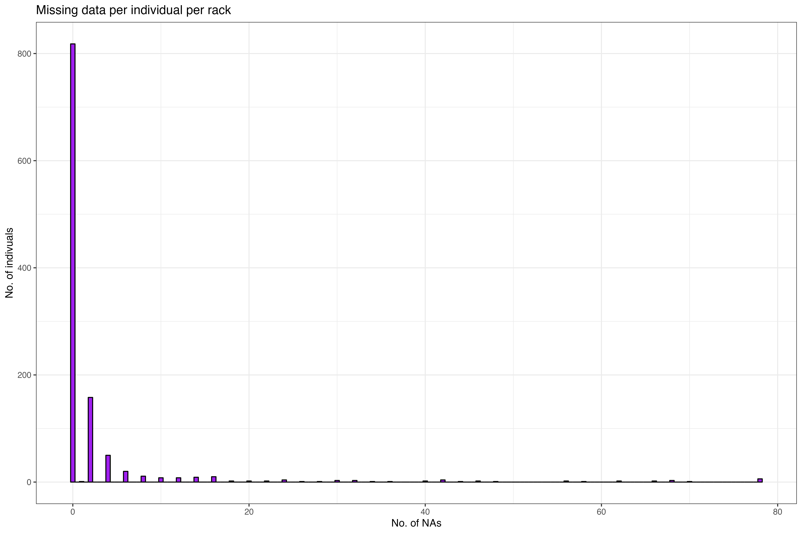
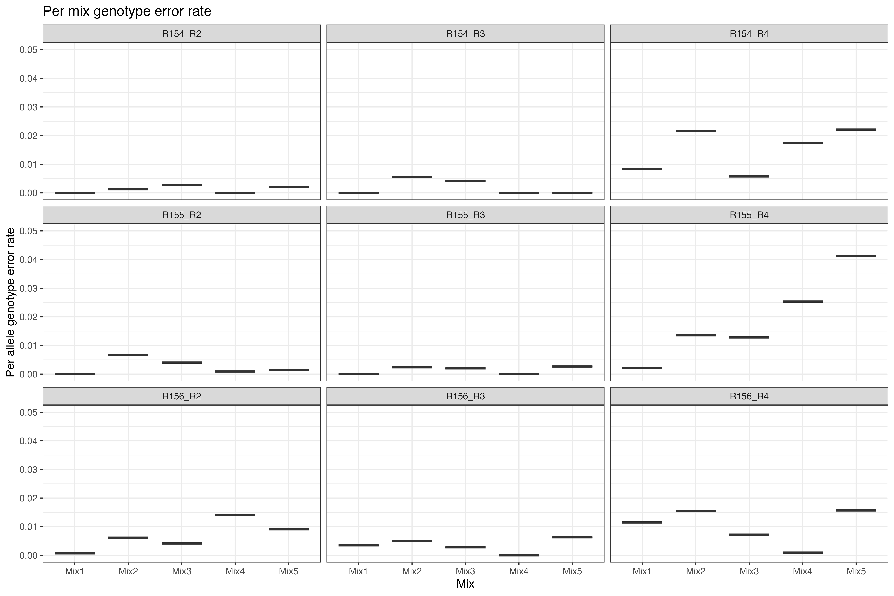

| Rack 1 | Rack 2 | Treatment | No. of mismatches | Allelic error rate | Genotype error rate |
|---|---|---|---|---|---|
| R154_R1 | R154_R2 | Internal control | 9 | 0.0012980 | 0.0020190 |
| R155_R1 | R155_R2 | Internal control | 20 | 0.0028039 | 0.0047666 |
| R156_R1 | R156_R2 | Internal control | 45 | 0.0064157 | 0.0128315 |
| R154_R1 | R154_R3 | Re-used detection plate | 15 | 0.0021564 | 0.0031627 |
| R155_R1 | R155_R3 | Re-used detection plate | 11 | 0.0015127 | 0.0027503 |
| R156_R1 | R156_R3 | Re-used detection plate | 26 | 0.0037303 | 0.0068867 |
| R154_R1 | R154_R4 | Re-used PCR plate | 139 | 0.0239821 | 0.0472740 |
| R155_R1 | R155_R4 | Re-used PCR plate | 113 | 0.0173260 | 0.0337320 |
| R156_R1 | R156_R4 | Re-used PCR plate | 68 | 0.0105231 | 0.0194986 |
Sustainable genetics project
Script
Abstract
Scientific research is a massive endeavor, consuming vast quantities of single-use plastics. With an ongoing global plastic crisis at our hands, we cannot hide behind the importance of scientific progress. A multitude of possible solutions from shifting to reusable materials to generating shared campus-wide laboratory inventories are being proposed. Rethinking existing laboratory protocols is often encouraged, but it is rarely based on empirical testing. We designed an experimental set-up to evaluate the re-useability of 96 microwell plates in the context of an existing microsatellite genotyping protocol. In our standard procedure 11 microplates are required to genotype 96 samples. The samples are distributed from one plate to five plates for the first step (PCR amplification) and transferred to five new plates in the second step (fragment analysis). Due to the risk of contamination, the plates are usually single-use. We cleaned the plates using an environmentally friendly approach and systematically reused the plates in either the first step (Re-used PCR plate) or the second step (Re-used detection plate) of the protocol. We included an internal control treatment to establish baseline error rates. We found no detectable difference in quality of either scoring or final genotyping for the ‘Re-used detection plate’ treatment. Whereas the ‘Re-used PCR plates’ led to a decreased scoring and a 10-fold increase in genotype errors. We conclude, that washing and re-using 96 microwell plates for fragment analysis can decrease the use of single-use plastics in laboratories, thereby saving costs and improving sustainability in the lab.
Introduction
We set out to explore the re-useability of 96-micro well plate with the aim to test the following hypothesis: 1) 96 microwell plates can be cleaned and reused within the context of microsatellite genotyping, 2) the genotype error rate will be higher for plates reused for PCR amplification.
Materials and Methods
We designed an experimental setup to assess the re-usability of 96-micro well plates within the context of microsatellite genotyping. The setup contained 4 treatments: standard procedure, internal control, re-used PCR plate and re-used detection plate (See Figure 1). In the standard procedure total genomic DNA is distributed from a rack to be PCR amplified in five separate multiplexed reactions on ‘PCR plates’ (PCR trays ROTILABO® 96 well, Standard, half frame, Roth Selection, Karlsruhe, Germany). Thereafter, the samples are resolved on ‘detection plates’ (Fisherbrand™ 96-Well Semi-Skirted PCR Plates, Thermo Fisher Scientific, Waltham, MA, USA). After the initial use, the plates were washed using the following steps; first, each plate was individually rinsed with distilled water and emptied 10 times, before submerging in soap water for two hours. After soaking, each plate was again rinsed and emptied 10 times before being left on a paper towel over night to dry. The re-used PCR plates and detection plates all originated from the ‘standard procedure’ round. We allocated the re-used plates to another rack than the original.

Microsatellite genotyping
285 tissue samples were collected from Bird Island, South Georgia (54°00024.800 S, 38°03004.100 W) during the austral summer of 2020-2021 (274 samples), 2015-2016 (9 positive controls), and 2 samples on rack 154 from 2006-2007. Tissue samples were collected from the flipper or umbilical cord of Antarctic fur seal pups and stored in 20% dimethyl sulphoxide saturated with sodium chloride at -20°C. The DNA was extracted using a standard chloroform-isoamylalcohol protocol and genotyped at 39 microsatellite loci separated into five multiplexed reactions for improved scoring. PCR amplification was performed using a Type It Kit (Qiagen) with the following program: 5 min denaturation at 94°C; 28 cycles of 30 sec at 94°C, 90 sec at mix-specific temperature (Supplementary table 1), and 30 sec at 72°C, finished by an extension of 30 min at mix-specific temperature. The PCR product was transferred to and diluted on detection plates before being resolved by electrophoresis on an ABI 3730xl capillary sequencer (Applied Biosystems, Thermo Fisher Scientific, Waltham, MA, USA). Each plate contained three positive controls to ensure standardisation of microsatellite scoring across plates. Allele sizes were scored automatically using GeneMarker v. 2.6.2 (SoftGenetics, LLC., State College, PA, USA) and manually inspected and corrected when necessary. Following customary procedure, any locus with more than 30% missing data was attempted to be gapfilled separately to minimize missing data.
Data evaluation
We calculated the allelic and genotype error rate between the different treatments using the ‘standard procedure’ treatment as reference. The ‘internal control’ treatment was included in the experimental setup to compute a baseline for error rates. The comparison between the different treatments and the standard procedure yielded a list of mismatches. In the cases where the mismatch stemmed from the ‘re-used PCR plate’ or ‘re-used detection plate’ treatment, the new genotype was compared to the original genotype. Here, original genotype refers to the genotype resolved from the same well in the first use of the plate. If the genotype matched the original genotype, the mismatch was marked as potential case of contamination. Additionally, we calculated the rate of missing data for all treatments.
For each sample we noted whether the genotype matched with the ‘standard procedure’ per loci and for all treatments whether the genotype was scored or not. This yielded two datasets referred to as ‘match’ and ‘missing genotype’ data respectively. We ran separate Bayesian binary logistic regression mixed models with treatment included as several indicator variables for match data and missing genotypes data. All statistical analyses were implemented in R version 4.2.1 with Rstudio version 2023.09.1+494.
| Rack | Control | Cases | Treatment |
|---|---|---|---|
| R154_R3 | R156_R1 | 4 | Re-used detection plate |
| R155_R3 | R154_R1 | 1 | Re-used detection plate |
| R156_R3 | R155_R1 | 8 | Re-used detection plate |
| R154_R4 | R156_R1 | 105 | Re-used PCR plate |
| R155_R4 | R154_R1 | 95 | Re-used PCR plate |
| R156_R4 | R155_R1 | 53 | Re-used PCR plate |
Results
281 samples were included in the analysis. On rack 154 the two samples from 2007-2008 were excluded, due to lack of DNA for the last treatment. Likewise for two of the positive controls on R156. In total, 21918 alleles were analysed, out of which 4645 (21.1926271%) were unscorable even after manual evaluation. We found a total of 446 mismatches on allelic level between all treatments across all racks. The genotype error rates varied from 0.002 to 0.047, with the error rates for the ‘Re-used PCR plate’ treatment being 10 times higher than the other treatments (see Table 1). A subset of the mismatches (266) were potential contamination cases (see Table 2), predominately found on the ‘Re-used PCR plates’.

Two bayesian models with binomial distribution were fitted. The first model explored the treatment effect on match (0 mismatch, 1 match) per loci. The treatments were fit as indicator variables, excluding ‘standard procedure’, which was the reference treatment for the mismatching. ID, Rack, Loci and Mix were included as random effects.
Match model Match ~ Internal control + Reused detection plate + Reused PCR plate + (1|ID) + (1|Rack) + (1|Loci) + (1|Mix)
The second model explored the treatment effect on missing genotypes (0 missing, 1 present) per loci. The treatments were fit as indicator variables and ID, Rack, Loci and Mix were included as random effects.
Missing genotypes model Missing genotypes ~ Standard procedure + Internal control + Reused detection plate + Reused PCR plate + (1|ID) + (1|Rack) + (1|Loci) + (1|Mix)
The first model yielded a significant effect of all treatments, where the Reused detection plate treatment had a positively diverged posterior distribution and the Reused PCR plate treatment yielded a negatively diverged posterior distributed in relation to the Internal control treatment (See Figure 3 A).
The second model yielded a significant effect of all treatments, where the Internal control treatment and the Reused detection plate treatment had a positively diverged posterior distribution and the Reused PCR plate treatment yielded a negatively diverged posterior distributed in relation to the Standard procedure (See Figure 3 B).

Discussion
Supporting Information
Description
Scientific research is a massive endeavor, consuming vast quantities of single-use plastics. The sustainable genetics project aim to empirically test the re-usability of lab plastic wear, specifically the plastic racks used for PCRs and detection. The project was based around the protocol for Antarctic fur seal genotyping using microsatellites. In this protocol, extracted DNA is first amplified using PCR and since transferred to detection plates for sequencing. The plates used for detection contain only a small diluted concentration of DNA, while the PCR plates have been used in the PCR process and therefore contain a high concentration of DNA. Therefore, we assume that the potential risk of contamination from a previously used plate would be higher in the PCR step.
Data
The data for this project are the raw sequencing reads from the ABI 3730xl capillary sequencer. Each files is identified with the following name structure: RackX_mixY_Z. Where X gives the rack number, Y the mix and Z the treatment (1 = standard procedure, 2 = internal control, 3 = Re-used detection plate and 4 = Re-used PCR plate).
PCR Program
| Stage | No. of cycles | Temperature (°C) | Duration | Process |
|---|---|---|---|---|
| 1 | 1 | 94 | 5 minutes | Heat up |
| 2 | 28 | 94 | 30 seconds | Denaturation |
| 60/53 | 90 seconds | Annealing | ||
| 72 | 30 seconds | Extension | ||
| 3 | 1 | 60/53 | 30 minutes | Annealing |
| 4 | 1 | 10 | Hold | Cool down |
Note: Annealing temperatures are mix-specific.
Missing data
Table 4: Unscored alleles
| Mix | Standard procedure | Internal control | Reused detection plate | Reused PCR plate |
|---|---|---|---|---|
| Mix1 | 98 | 56 | 22 | 432 |
| Mix2 | 58 | 26 | 24 | 154 |
| Mix3 | 36 | 26 | 20 | 80 |
| Mix4 | 38 | 20 | 18 | 544 |
| Mix5 | 48 | 66 | 44 | 170 |
| Total | 278 | 194 | 128 | 1380 |
| Mix | Standard procedure | Internal control | Reused detection plate | Reused PCR plate |
|---|---|---|---|---|
| Mix1 | 8 | 26 | 50 | 66 |
| Mix2 | 14 | 40 | 12 | 158 |
| Mix3 | 14 | 31 | 26 | 112 |
| Mix4 | 30 | 22 | 10 | 96 |
| Mix5 | 10 | 132 | 12 | 430 |
| Total | 76 | 251 | 110 | 862 |
| Mix | Standard procedure | Internal control | Reused detection plate | Reused PCR plate |
|---|---|---|---|---|
| Mix1 | 40 | 44 | 52 | 66 |
| Mix2 | 46 | 44 | 60 | 100 |
| Mix3 | 28 | 26 | 52 | 84 |
| Mix4 | 42 | 34 | 44 | 52 |
| Mix5 | 52 | 52 | 48 | 400 |
| Total | 208 | 200 | 256 | 702 |
Table 4 display the number of unscored alleles within each mix on each plate. For R154 and R156 this is based on 93 individuals, while for R155 it is based on all 95 individuals on the plate.
Before starting the error rate evaluation, the no. of genotypes that could not be scored for each round and mix per rack is tabulated (See Table 4). From this, we know that a total of 4645 alleles could not be scored. In Figure 4 and Figure 5, the location of the missing data on the plate is visualized. More purple hues correspond to more missing loci for that particular samples, and we can conclude that certain samples seem to have failed almost completely. This could hint at poor DNA quality. The data is arranged in the plot to match the layout of the actual plate. Through visual inspection, there might be a slight tendency for the missing loci to be located more towards the edges of the plates compared to the center.
Based on the heatmaps, it is obvious that even after gap filling, some individuals have a higher proportion of missing data than others. To further explore the distribution of missing data, the number of NAs for each row of the dataset was tabulated. Each row corresponds to one individual on one rack, which means that each individual is represented 4 times. Based on Figure 6 the majority of individuals have less than 10 errors, however 95 individuals are represented in the dataset with at least one occurrence of more than 10 missing alleles.

The genotyping error rate per allele and per locus was calculated across all treatments (Figure 2). To further understand where the errors occur in the dataset, the error rate per mix across all racks were calculated.
